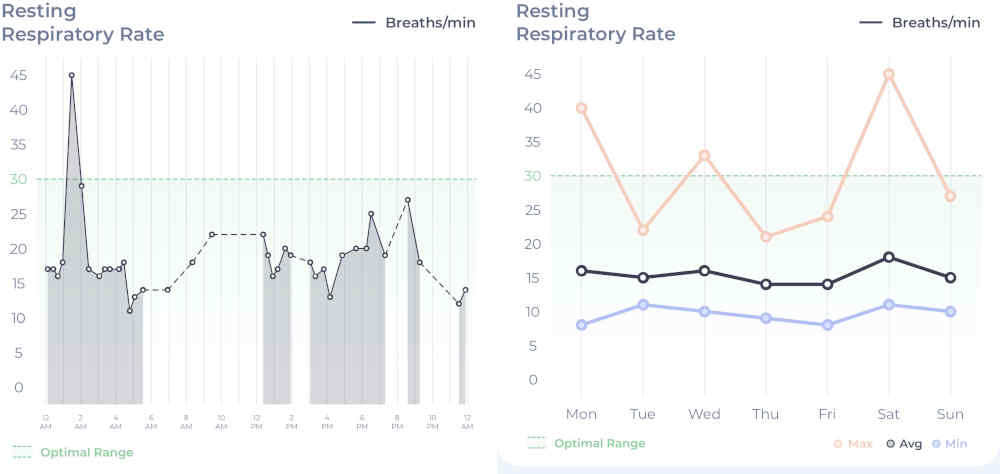

Monitoring Your Pet’s Breathing at Home: A Vet Cardiologist’s Guide
How do you know if you're doing it right?
Published on: February 24, 2026
Reviewed on: February 24, 2026
As a veterinary cardiologist, one of the most frequent questions I receive from both colleagues and pet owners is some variation of this:
“I’m counting my pet’s breathing rate at home, but the numbers are all over the place. How do I know if I’m doing it right?”
Home monitoring of the Sleeping Respiratory Rate (SRR) is one of the most powerful tools we have in managing heart disease. However, it only works if the data is clean. If we measure breathing at the wrong time, we get “noise” instead of clinical insight.
What is SRR (and why does “Deep Sleep” matter?)
When vets talk about SRR, we are looking for the number of breaths per minute when a cat or dog is genuinely, deeply asleep. Breathing rate is incredibly sensitive. It increases the moment a pet feels:
-
Excitement or playfulness
-
Anxiety or stress
-
Pain or physical discomfort
-
Changes in room temperature
From a clinical perspective, a breathing rate taken while a pet is awake is almost impossible to interpret accurately. If your pet is watching you, dozing with one eye open, or waiting for a treat, the data is essentially unusable for tracking heart disease.
The Problem with “Light Sleep”
The most common issue I see in home data isn’t a lack of effort—it’s timing. Pets in a light sleep or resting-but-awake state often change their patterns. They might sigh, take shallow breaths, or even hold their breath briefly.
What we are looking for is a calm, steady, rhythmic pattern. Ideally, your pet should be lying comfortably on their side in a familiar, quiet environment.
Consistency Over Perfection
Vets care more about consistency than a “perfect” single measurement. If you measure your pet’s breathing at noon in a sunny conservatory one day, and then at midnight in a cool bedroom the next, the numbers cannot be meaningfully compared.
The Solution: Create a Routine
-
Option A: Early morning before the household wakes up.
-
Option B: Late evening once the house is quiet.
When you bring a set of numbers taken under the same conditions every time, I can trust the trends much more. Alternatively, consider doing several counts in the day and averaging them, to help smooth out these variations, or get a device that can do multiple counts for you.
Why Vets Look at Trends, Not Spikes
A single elevated breathing rate isn’t always a crisis. A bad dream or a warm night can cause a temporary spike.
What concerns a cardiologist is a sustained rise. If your pet’s baseline is usually 18–22 breaths per minute, but it creeps into the high 20s or 30s over several consecutive days, that is a signal that we may need to intervene or adjust medications.
Practical Tips for Counting
-
What to watch: Watch the chest rise and fall or the movement of the flank. One rise and one fall equals one breath.
-
The Timing: Counting for a full 60 seconds is the gold standard. However, if the breathing is steady, counting for 30 seconds and doubling the number is a practical alternative.
-
The “Reset” Rule: If the pattern changes halfway through (they wake up or sigh), stop and try again later.
The Role of Technology and Monitoring Collars
Smart collar devices, like the Maven Smart Collar, are changing how we collect this data. They can capture breathing rates multiple times a day, often more reliably identifying those “deep sleep” windows without the stress of a human hovering over the pet with a stopwatch. And by taking lots of counts and averaging them out, we get much more meaningful data.
While these devices are excellent for reducing human error and capturing longitudinal trends, they do not replace your vet. They don’t diagnose heart failure or replace echocardiograms; they simply provide a better “big picture” for your vet to interpret.
How Your Data Changes Clinical Decisions
When you bring consistent, context-rich data (e.g., “Breathing was 24, pet was asleep, room was a bit warm today”) to a cardiology appointment, it genuinely improves our decision-making.
It helps us decide if a change is due to heart disease progression, medication side effects, or environmental factors. Often, this data allows us to intervene earlier—before a pet becomes clinically unwell.
Activity data as well is also helpful, as it can drop off when heart failure starts to approach. However subjective assessment can be hard, and an objective measure using a smart device can be really helpful to compare against.

Final Thought: You aren’t expected to be a diagnostician. You are helping your vet see the 95% of your pet’s life that happens outside the clinic. Stress from the clinic visit can distort all these numbers so much, that ‘in clinc’ counts are pretty meaningless most of the time. Done well, home monitoring makes veterinary care better for everyone.
See our full comparison of Tracking Collars here.
Check out my video on the topic here:
Interested in the Maven tracking collar (data used in images above)? You can use the link below to receive a discount on your subscription and support the VetCardioHub channel.
For transparency, Maven sent me this unit free of charge for testing. If you choose to sign up via the link at the end of this article, the hub receives a small commission to help with our running costs.